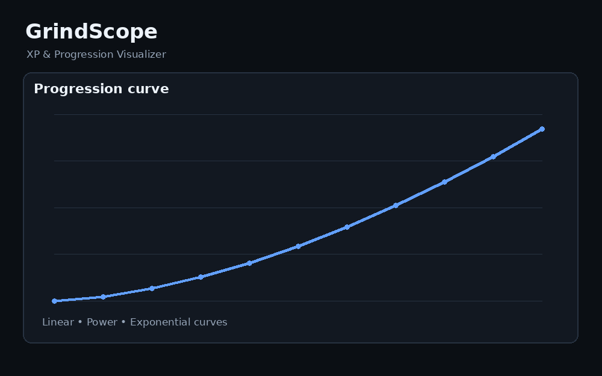
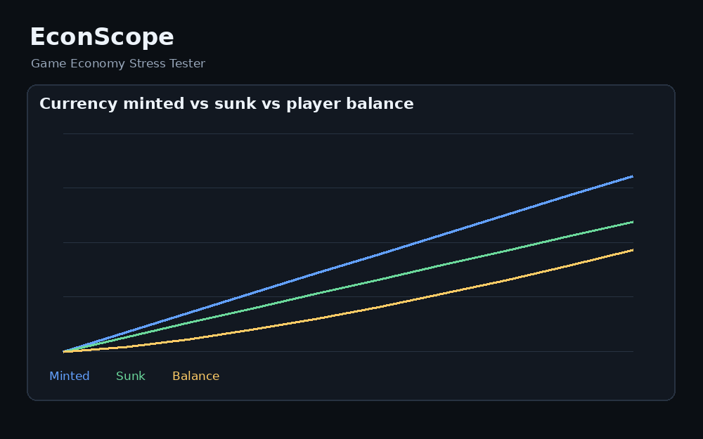
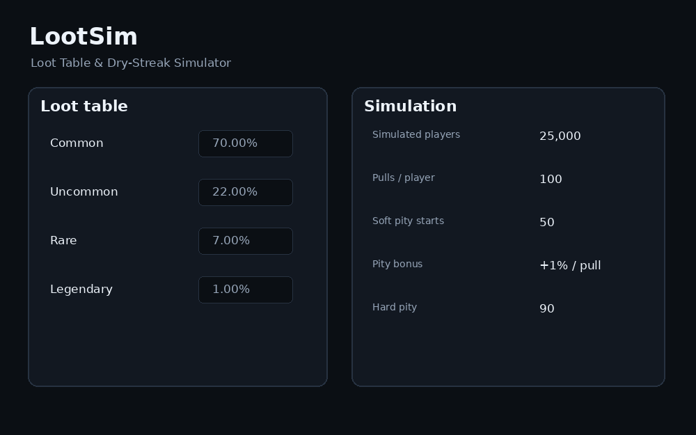

Progression
GrindScope
Turn XP formulas into player-time estimates. Compare curves, inspect target-level pacing and export per-level balancing data.
$2.99+
Get GrindScopeFocused offline tools for progression pacing, game economies and loot systems. Open the file, test your numbers, export the results.
Each tool is intentionally narrow: fewer menus, faster answers, and no SaaS overhead.

Turn XP formulas into player-time estimates. Compare curves, inspect target-level pacing and export per-level balancing data.

Stress-test currency faucets, sinks, wealth growth, purchase behavior and item affordability across long simulations.

Run Monte Carlo loot tests, measure dry streaks and model soft or hard pity before players experience your RNG.
Start with the system that can hurt your player experience the most.
| Problem | Tool | Best for | Exports |
|---|---|---|---|
| Leveling feels too fast / too grindy | GrindScope | XP curves, progression pacing | CSV + JSON |
| Players accumulate too much currency | EconScope | Faucets, sinks, affordability | CSV + JSON |
| Rare drops feel unfair | LootSim | Loot tables, pity, dry streaks | CSV + JSON |
One small ZIP. No installer, account or cloud dashboard.
Open the HTML file locally and change the values that matter to your game.
Take CSV or JSON results back into your design docs, spreadsheets or game pipeline.
Pick the system you are tuning and get a clearer answer in minutes.